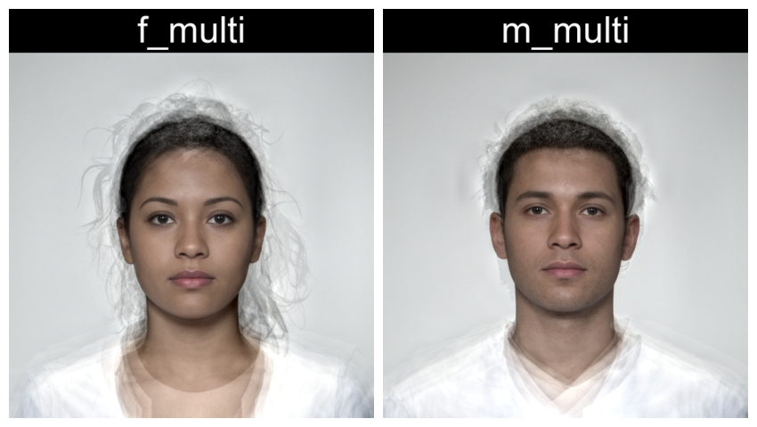

WebmorphR has plotting functions to make it easier to create reproducible figures from your stimuli.
library(webmorphR)
library(webmorphR.stim) # for extra stimulus sets
library(tidyverse)
wm_opts(plot.maxwidth = 850)Borders and Background
You can add a border to each image using pad. Values
less than 1 will set border width as a proportion of the image width,
while values greater than or equal to 1 will set it as pixels. You can
also change the border colour using fill.
pad(stimuli, 1, fill = "hotpink")You can set different border sizes for the top, right, bottom and left sides (think “TRouBLe”). This can be useful for creating space for labels outside the image.

You can set the border colour separately for each image.
Rows and columns
Set nrow or ncol in the plot()
function to control the number of rows and columns.
comp <- load_stim_composite() |> resize(0.5)
plot(comp, nrow = 2)Set byrow = FALSE to order the images by column instead
of the default. You can control the space between images with
padding.
We’d set maxwidth globally at the top of the script
using wm_opts(), but you can also set maxwidth
or maxheight for a specific plot.
plot(comp,
ncol = 2,
byrow = FALSE,
padding = 0,
maxheight = 850*2)
Multipart figure
To make a multipart figure, you usually don’t want padding around the
outside of a component image, so set external_pad = FALSE.
Set byrow = FALSE to distribute images by column.
Visualising Templates
Use the draw_tem() function to show the delineations. By default, points are translucent green circles and lines are translucent blue.
stimuli |>
draw_tem()You can change the default colours and translucency with the
line.color, pt.color, line.alpha
and pt.alpha arguments. Remove the image and set the
background colour with bg.
Labels
There are two labelling functions: mlabel() uses syntax
like magick::image_annotate() to configure labels and
gglabel() uses syntax like ggplot2::annotate()
to configure labels. They have slightly different features, but which
you use will probably be determined by whether you’re more familiar with
magick or ggplot. The label() function defaults to
mlabel() unless you use arguments that are only used in
gglabel().
mlabel()
Label figure panels with the image name.
mlabel(stimuli)Use the rename_stim() function to set new names.
load_stim_composite() |>
rename_stim(pattern = "f_", replacement = "Female ") |>
rename_stim(pattern = "m_", replacement = "Male ") |>
label() |>
plot(nrow = 2)Alternatively, set text to a vector of labels to use.
Labels can be positioned with the gravity and
location arguments from the {magick} package. In the
example below, the text is positioned at the northwest (upper-left)
corner, 10 pixels to the right and 5 pixels down.
label(stimuli,
text = c("Female", "Male"),
gravity = "northwest",
location = "+10+5",
color = c("darkgreen", "darkmagenta"),
size = 40,
style = c("normal", "italic")
)You can customise the labels further, including vectors with a different value for each image. Vectors that are too long will be truncated and short vectors will be recycled.
directions <- c("north", "northeast", "east", "southeast",
"south", "southwest", "west", "northwest")
rep(stimuli, 4) |>
label(
text = paste0(" ", directions, " "),
gravity = directions,
color = "white",
boxcolor = rainbow(4),
strokecolor = "black",
font = "Arial",
weight = 800,
style = "italic",
kerning = 1.2
) |>
plot(nrow = 2)gglabel()
Label figure panels with the image name.
gglabel(stimuli)Set label to a vector of labels to use. The default font
size used by ggplot is pretty small, so increase size. I
can’t help you with how to set that argument; I just use
trial-and-error. Labels can be positioned with the x and
y arguments. Unlike mlabel(), the origin is
the lower left corner, so setting the label 5 pixel below the top
requires you to calculate the image height and subtract 5. However,
unlike ggplot, x and y values less than or equal to 1 are interpreted as
percentages. Adjust label alignment with hjust and
vjust.
label(stimuli,
label = c("Female", "Male"),
size = 15,
x = 10, y = height(stimuli) - 5,
hjust = 0, vjust = 1,
color = c("darkgreen", "darkmagenta"),
fontface = c("plain", "italic")
)You can customise the labels further, including vectors with a different value for each image. Vectors that are too long will be truncated and short vectors will be recycled.
The “label” geom lets you set fill and passing for the labels.
directions <- c("north", "northeast", "east", "southeast",
"south", "southwest", "west", "northwest")
rep(stimuli, 4) |>
label(
geom = "label",
label = directions,
size = 10,
x = c(0.5, 1, 1, 1, 0.5, 0, 0, 0),
y = c(1, 1, 0.5, 0, 0, 0, 0.5, 1),
hjust = c(0.5, 1, 1, 1, 0.5, 0, 0, 0),
vjust = c(1, 1, 0.5, 0, 0, 0, 0.5, 1),
color = "white",
fill = rainbow(4),
family = "Arial",
fontface = "bold.italic",
label.padding = unit(3, "mm"),
label.r = unit(0.5, "lines"), # round corners
label.size = unit(1, "lines") # label border
) |>
plot(nrow = 2)You can set alpha and angle to create
watermarked images.
stimuli |>
label(
label = "watermark",
x = 0.5,
y = 0.5,
geom = "text",
size = 20,
color = "black",
fontface = "bold",
angle = -30,
alpha = 0.25
)Other annotations
While the gglabel() function is mainly meant for “text”
and “label” geoms, you can use it for other ggplot geoms.
# get eye points and calculate mean x and y coordinates for each image
intercepts <- get_point(stimuli, 0:1) |>
group_by(image) |>
summarise(x = mean(x),
y = mean(y),
.groups = "drop") |>
# face coordinate y-axis is opposite to ggplot y-axis
mutate(y = height(stimuli) - y)
stimuli |>
label(
geom = "rect",
xmin = 0,
xmax = intercepts$x,
ymin = 0,
ymax = intercepts$y,
fill = "grey"
) |>
label(
geom = "vline",
xintercept = intercepts$x,
color = "red", size = 2
) |>
label(
geom = "hline",
yintercept = intercepts$y,
color = "purple", size = 2
)This script took 0.2 minutes to render all the included images from scratch.